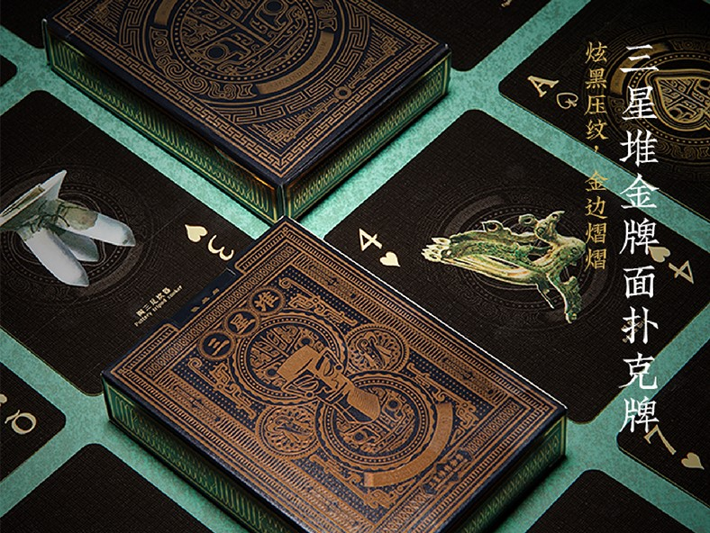
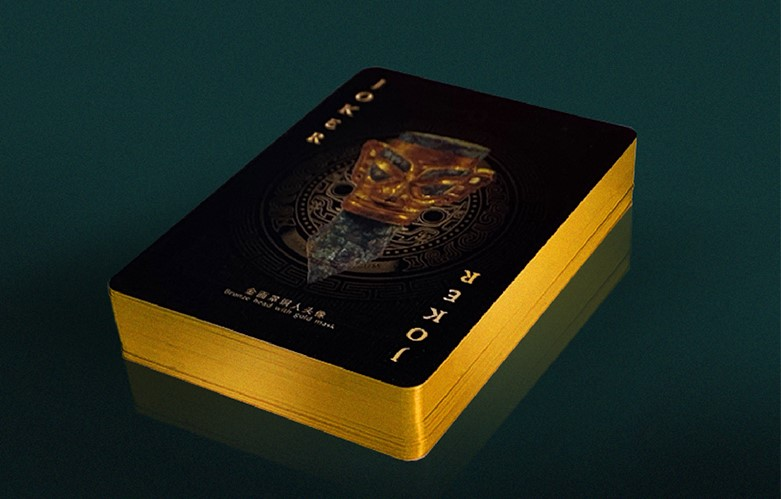

This poker is designed and sold by the "The Nation's Greatest Treasure"
tv program. "The Nation's Greatest Treasure" (also know as "National
Treasure") is a 2017 Chinese cultural exploration variety TV program
that aired on CCTV-3 and CCTV-1 in China. They are also available on
YouTube. The
material of this poker is cardboard and it functions just like regular
pokers but with unique designs.

Traditional Elements
The patterns printed on the pokers are inspired by Sanxingdui (also
known as Three Star Mound), an archaeological site and a major Bronze
Age culture in modern Guanghan. The discovery at Sanxingdui, as well as
other discoveries such as the Xingan tombs in Jiangxi, challenges the
traditional narrative of Chinese civilization spreading from the Central
Plain along the Yellow River, and Chinese archaeologists have begun to
speak of "multiple centers of innovation jointly ancestral to Chinese
civilization."
Watch the video below to learn more!
Description of the video:
A massive dig unearthed over 500 sophisticated artefacts in the
Sanxingdui archaeological site in China’s southwestern province of
Sichuan. The dig, which started in 2019, found treasures that had no
apparent connection to known Chinese culture and were likely used for
religious or magical ceremonies. The amount of items discovered suggests
the existence of a prosperous, yet unknown civilisation that may have
been economically prosperous and technologically advanced.

If you would like to learn more about this product, "The Nation's Greatest Treasure" tv program, and Sanxingdui,
you may watch this
video
for more information.